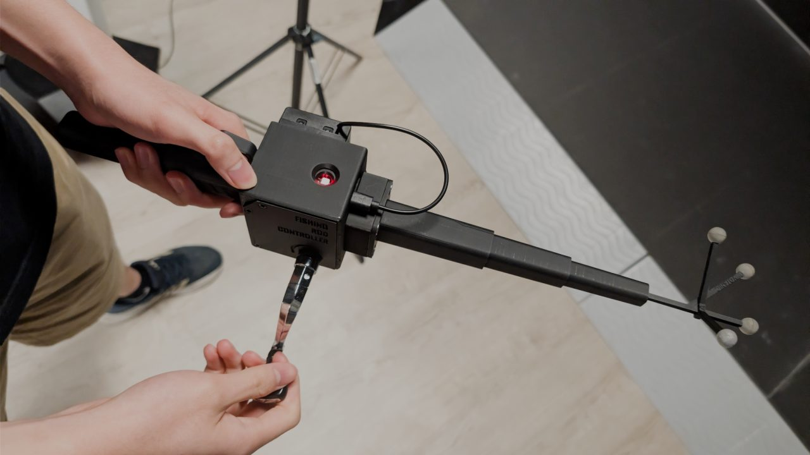
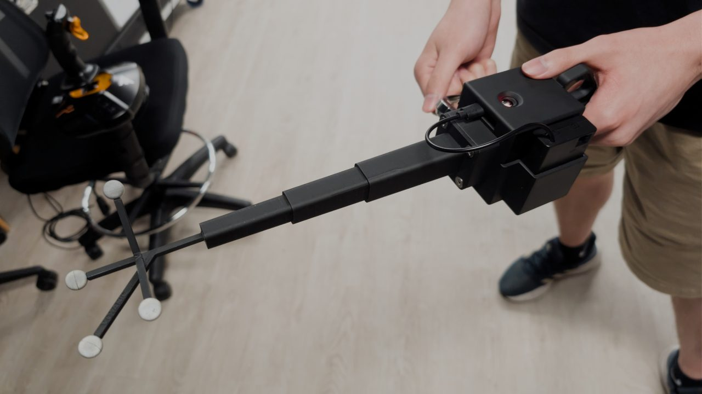

A rod that talks to XR
XRCC is the XR creation platform I work on at Votanic. This game is the demo for connecting several microcontrollers to it over BLE at once: the rod you hold and a fishing bag with difficulty buttons, each with its own ESP32.
Each ESP32 reads its sensors or buttons and streams them to XRCC wirelessly, and the game reacts to both devices together.


Choose, cast, wait, reel
-
00
Pick a difficulty
Press easy, normal or hard on the fishing bag. It's the second BLE device, connected alongside the rod.
See the bag in 3D -
01
Cast
Swing the rod. The MPU6050 motion sensor detects the cast.
-
02
Feel the bite
When a fish bites, the coin vibration motor in the box buzzes, so you feel the bite in your hand.
-
03
Reel it in
Wind the crank. The HW-040 rotary encoder reads the reeling.
All the while, the four-marker tracker on the tip lets the VR tracking cameras follow where the rod is.
The fishing bag
The game is really a demo of XRCC talking to several microcontrollers at once. The bag is the second device: its own ESP32, a battery and three buttons for choosing the difficulty, worn on a belt and connected over BLE alongside the rod.
Nothing selected
Pick a part to highlight it.
One month, start to finish
- HARDWARE
Parts from Taobao
Bought the ESP32, MPU6050, HW-040 encoder and coin motor on Taobao.
- DESIGN
Fusion 360 housing
Handle, electronics box and cover designed around the parts, with bosses for the boards and countersunk screws.
- PRINT
Four or five failed prints
Printed on the Bambu Lab X1 Carbon. Four or five attempts failed before the final version.
- DEMO
Working product
Assembled and connected to XRCC as the demo of the BLE feature.
BLE on Windows, the long way round
I also built the whole backend for the feature: XRCC (Unity, C#) connecting to and reading from both devices over BLE, using the open-source BleWinrtDll library. It builds on the single Micro:bit connection I wrote for the XR RingFit Game: once that was stable, this project took it to several devices at once.
The library doesn't include several features this needed, so most of the time went into debugging. I dug through its GitHub issues and the fixes other developers had shared to add what it lacked, such as disconnecting from a device and checking whether a connection is still alive.
- Disconnect
- Connection status checks
- Multiple ESP32 and Micro:bit devices